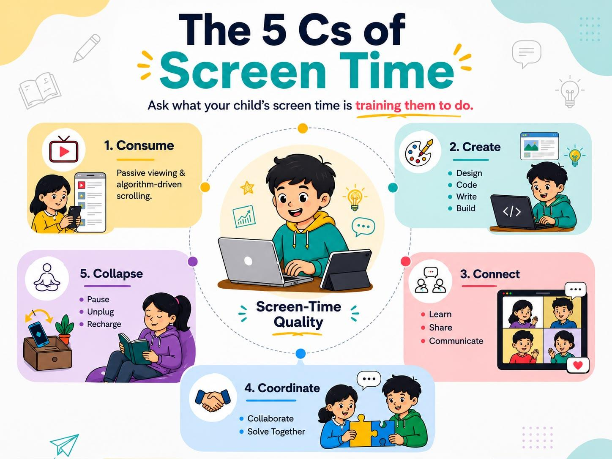
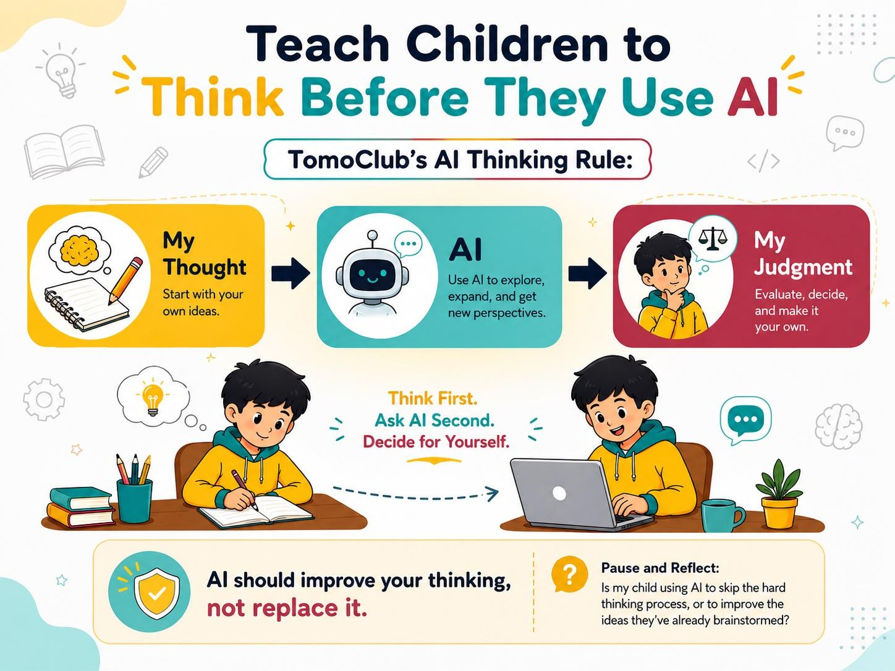

Healthy screen-time habits require much more than setting time limits. Explore these 5 practical tips to help your child build balance, critical thinking, and intentional technology use.
You're standing in the car line after school, waiting impatiently amidst the slow-moving traffic, when you spot your kid heading towards you. Before you even start the car engine to move, you hear two sounds at once: the thudding of the backpack on the floorboard, followed by, "Can I have my phone?"
In your already frustrated state, such a demand might fluster you, and you might wonder, Why is my child always on the phone? But before you lash out at your child with questions, we ask you for a mental reframe:
But what is the screen time training my child to do?
Switch your question this way, and you will enter a world where, rather than trying to completely restrict your child's tech usage, you teach them how to distinguish passive "Screen Time" from mindful and creative "Skill Time." This helps build healthy technology habits in the long term.
This blog will explore 5 practical tips that you can use to make your child a future-ready, intentional, and thoughtful user of technology.
1. Ask What the Screen Time is Training Your Child To Do
When it comes to daily screen media time per day, the statistics are becoming increasingly grim, with the daily average for tweens (8-12 years) coming to five and a half hours per day. While your first instinct might be to panic and wish that your child doesn't become a part of this sample, the smarter thing to do is to understand that not all Screen Time is the same.
TomoClub's Screen-Time Quality Map can be quite handy in sorting this distinction. You need to think in terms of the 5 Cs:
- Consume: Watching videos or scrolling through apps passively/driven by an algorithm.
- Create: Creating something, whether it is a story, designing a website, coding, or editing videos.
- Connect: Talking with friends, attending a class, or participating in a multi-person session to learn and communicate.
- Coordinate: Collaborating with others to solve a problem together or discussing/debating things.
- Collapse: Stop using screens mindlessly when feeling emotionally dysregulated or stuck.

Not all Screen Time is the same: TomoClub's Screen-Time Quality Map
So the next time you see your child sitting in front of the screen, first try to understand what activity they are engaged in and what skill they are learning from it. Because completely restricting screen interaction in today's tech-driven world is a myth. The goal then becomes to monitor your kids' screen activity to prompt informed, balanced technology use, not to take away their freedom.
2. Help Your Child Build Agency, Not Just Follow Rules
Now that you have nailed the distinction between mindful digital engagement and useless scrolling, the next step is to help your child build Digital Agency, rather than setting restrictive rules that they do not understand.
Decades of psychological research, specifically Self-Determination Theory, show that strict compliance doesn't build lasting habits. When children turn off screens only because they fear punishment, it isn't teaching them self-control; it's like a child working on his classwork just because the teacher is monitoring them.
To turn a rule into a lifelong habit, children need a sense of autonomy. They need the agency to understand why they are closing an app and the opportunity to make that choice themselves. This can be achieved by training them right from early tech exposure to ask questions like:
- Why am I opening this app?
- What do I want to accomplish?
- When am I done using an app?
When they learn to treat their digital actions as meaningful and goal-directed rather than a thoughtless stroll, they will self-regulate in the long run. You won't have to worry about teaching them healthy screen-time habits; they will develop naturally.
Your job as a parent then becomes to ensure consistency in their thinking, rather than punishing their actions.
3. Replace Screen-Time Battles with Better Conversations
Your child loses in a game and screams at the screen. Your first instinct might be to lecture them or confiscate the device. But what if you treated this moment as a window into their emotional patterns instead of a battleground?
Shifting from policing to coaching starts with curiosity. Instead of asking defensive questions like, "Why are you always on your phone?" try using TomoClub's 5-Minute Debrief after they finish gaming, streaming, or using AI tools:
- Step 1: Ask for a tour. "Show me what you were doing. I won't interrupt for two minutes."
- Step 2: Ask for the goal. "What were you trying to do there?"
- Step 3: Ask for the decision point. "Where did you have to make a choice?"
- Step 4: Ask for the emotional pattern. "When did you feel frustrated, excited, or proud?"
- Step 5: Ask for a transfer. "Where else does this happen in real life?"
When your child reacts intensely to a digital setback, the lesson isn't that technology is bad. The lesson is helping them look inward and determine how they react when something doesn't go their way, both emotionally and physically.
Here, a screen can reveal your child's emotional patterns faster than a lecture ever will. By replacing the battle with a soft, structured conversation, you help them build real-world self-awareness.
4. Ask Them to Question Their Digital World
Your child's feed, just like yours, is flooded with an endless stream of content carefully sorted by algorithms. But just like in the physical world, simply because something crosses their path doesn't mean it deserves their attention.
Social media platforms, video sites, and digital feeds run on the "attention economy." Behind every screen is a highly advanced algorithm that acts like a digital matchmaker. It tracks every pause, click, and swipe to solve a single puzzle: What will keep this user on the screen for one more minute?
Children often assume their feed is just a random assortment of popular videos, not realizing that algorithms are specifically designed to capture attention, and do not always support learning.
Healthy technology habits, therefore, have to include an understanding of how technology can sometimes influence us to do things that aren't the most beneficial for us.
You can build this critical thinking by practicing a simplified Algorithm Autopsy. Occasionally, sit down and explore your child's feed together. Instead of judging what they are watching, act as a curious investigator and ask these questions:
- Why do you think this keeps appearing?
- What does this app want you to click next?
- How does this content make you feel?
- Is this helping you learn, create, or simply keeping you hooked to keep watching?
By making them think about how the content actually ends up on their screen, you empower your child to step out of the endless scroll. They stop being passive consumers and start developing the digital judgment required to navigate the internet safely and intentionally.
5. Teach Children to Think Before They Use AI
From school assignments to life decisions and day-to-day inquiries, children have started relying on AI in multiple ways. It serves as a teacher, a counselor, a guide, and a friend. Therefore, when considering your child's digital well-being, skipping over AI literacy is no longer an option.
The goal here is to teach your child to pause and think before they turn to AI, ensuring they don't use it in ways that erode their critical thinking and creativity. One Superintendent shared a fantastic example of healthy AI usage: a Grade 4 student compared his own essay with one produced by AI. By evaluating what made the AI version different, whether it was advanced vocabulary, structural flow, or deeper examples, he only brought in AI to supplement his ideas and present them in a better way, and not replace them.
To make this mindset shift simple for your child to practice at home, use TomoClub's AI Thinking Rule:

Teach Children To Think Before They Use AI: Try TomoClub's AI Thinking Rule
In this framework, AI is only introduced after the initial brainpower has been spent. It should be used exclusively to evaluate ideas, identify missing blind spots, and offer creative suggestions, not replace original thinking.
Bring AI Literacy Home: Navigating the fast-moving world of artificial intelligence can feel overwhelming for any parent. If you want to help your child build a true digital agency and master skills that make them future-ready, explore how TomoClub helps kids become curious, critical, and careful users of AI who can actually build something original.
If these tips seemed a bit too overwhelming to you, do not worry, we've got you covered! Managing your kid's screen time doesn't have to be a stressful task you spend days brooding over. It can be set into motion through small steps, every day.
Try a fun, 7-day screen-time reset challenge that involves the entire family in building sustainable habits that advance your child's mental well-being. The goal isn't perfection; it is simply to spark awareness and better conversations. Here is a sneak peek at your week:
- Day 1: The Observation Day. Notice yesterday's screen habits without passing judgment.
- Day 2: The Co-Pilot Phase. Ask your child for a two-minute tour of their favourite app.
- Day 3: The Focus Shift. Turn off one digital distraction, like push notifications on a specific device.
- Day 4: The Algorithm Autopsy. Discuss what an app is encouraging them to do.
- Day 5: The Creator Mode. Create something before consuming content.
- Day 6: The AI Check-In. Practice the AI Thinking Rule together on a homework question or random curiosity.
- Day 7: The Review. Hold a short Family Tech Check-In. Ask: What helped you this week? What distracted you? What should we keep doing? What should we change?
Conclusion: Moving From Screen Time to Skill Time
At the end of the day, managing kids' screen time cannot be done by frantically counting the number of hours a child spends on a device. It should be about what that screen time amounts to. Quality screen time is defined in terms of the skills, ability for judgement, and agency that it allows your child.
Your goal as a parent isn't to raise children who never touch screens; that is simply not a reality in today's world. It is to raise children who know how to think, question, create, communicate, and make intentional decisions with the technology in their hands. That is how we successfully move from passive screen time to powerful skill time.
If you are ready to help your child build those essential skills, explore TomoClub's programs →. Let's continue the journey together!
Frequently Asked Questions
How do I start building healthy screen time habits for kids if they are already used to unlimited scrolling?
Do not try to cut off all devices overnight; that only leads to tech battles. Start by changing what they do on the screen rather than focusing solely on the timer. Use the 7-Day Screen-Time Reset to introduce small, gradual shifts as a family, like making dinner time completely device-free.
My child uses ChatGPT for schoolwork. How do I know if it is helping or hurting their learning?
AI becomes a problem when it replaces your child's critical thinking and does the work for them. Introduce the AI Thinking Rule (My Thought → AI → My Judgment) to ensure they use AI as a brainstorming partner, not the originator of ideas. AI literacy works best when parents and schools are on the same page.
Is video gaming considered "bad" screen time?
Not necessarily. According to TomoClub's Screen-Time Quality Map, there is a massive difference between passively watching gaming videos (Consume) and actively building worlds in Minecraft or coding a game (Create). Active, problem-solving games qualify as "Skill Time" rather than mindless distraction.